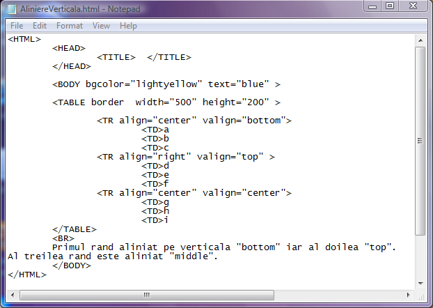

Atributele etichetei TR
1)Atributul align
Atributul align determina modul de aliniere al continutului celulelor de pe un rand. Valorile lui
sunt: "left"- pentru aliniere la stanga celulelor, "right"- pentru aliniere la dreapta celulelor si
"center"- la centrul celulelor.
Exemplu de aliniere diferita in celule
2)Atributul bgcolor
Atributul bgcolor seteaza culoarea de fundal a celulelor de pe randul respectiv. Valorile
acestui atribut sunt sau o culoare valida in limba engleza sau un cod hexazecimal al culorii
cu sintaxa "#RRGGBB".
Exemplu de randuri cu culori diferite
3)Atributul valign
Atributul valign determina prin valorile sale modul de aliniere pe verticala a datelor in celulele tabelului.
Valorile posibile sunt:
- "top"-adica in partea superioara a celulei
- "bottom"-adica in partea de jos a celulei
- "middle"-adica centrat pe verticala
Iata mai jos codul sursa pentru o pagina web care afiseaza un tabel in care datele de pe primul rand sunt aliniate
in partea de jos a celulei iar datele de pe al doilea rand sunt aliniate in partea superioara a celulei. Datele din
celulele celui de/al treilea rand sunt aliniate la centru. Click pe cod pentru a vedea pagina web...

Inapoi la Tabele...